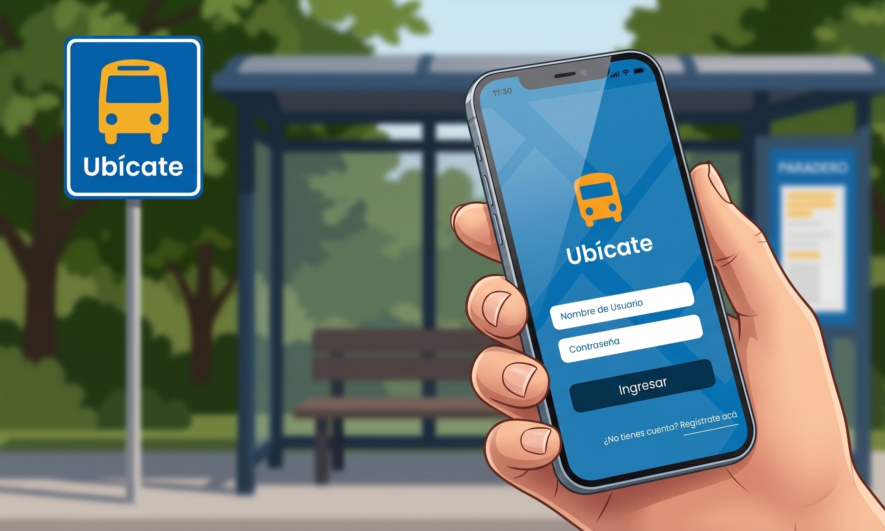
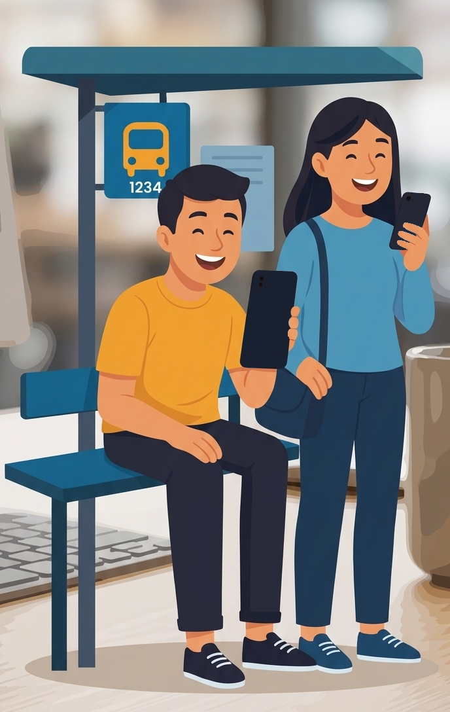
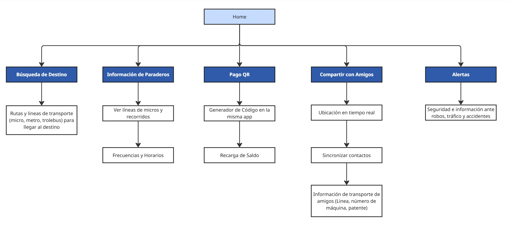

App Ubícate
El sistema de transporte público en la V Región (Valparaíso - Concón) atraviesa una crisis de desinformación y desconfianza, con licitaciones vencidas y una alta dependencia del pago en efectivo. Esta incertidumbre genera ansiedad y exclusión en miles de usuarios que dependen de las micros para su vida diaria.
Ubícate nace como una respuesta desde el diseño de interacción para transformar esta "odisea" en una experiencia digna.
A través de una investigación profunda en terreno, desarrollamos una solución mobile que centraliza la información en tiempo real y digitaliza el pago, priorizando la accesibilidad y la autonomía de estudiantes, trabajadores y adultos mayores.
Empatía y Descubrimiento
No nos quedamos en el escritorio; fuimos al terreno. Mediante metodologías AEIOU, entrevistas y encuestas, identificamos que el problema no es solo la falta de buses, sino la ansiedad que genera la incertidumbre.
- Puntos de dolor clave: Inseguridad en los paraderos, dependencia del efectivo y falta de información para personas con movilidad reducida.
- Benchmark: Analizamos sistemas globales (RATP, GVB) y locales (EFE, Red). Concluimos que, aunque la infraestructura sea robusta, la experiencia digital suele olvidar el factor humano.

Entendiendo al Usuario
Identificamos perfiles críticos que representan la diversidad de la V Región: desde el estudiante o trabajador que lucha contra la impuntualidad, hasta el adulto mayor que busca autonomía en un entorno geográfico complejo. Estos perfiles nos permitieron diseñar no para "un usuario genérico", sino para necesidades específicas de seguridad y claridad.
“Que tuviéramos mejor a las micros arriba, porque a veces los asientos están malos, a veces se llueven las micros en cierto invierno, no hay como mucho asiento para la gente adulta o mayor”
“Cambiar el pago a tarjeta, porque así sería mucho más fácil, y los micreros respetarían un poco más las normas, además de hacer que la micro no sea una empresa privada... Eso es todo”
“La disposición del conductor, es mala. Te reciben y te entregan la plata de mala manera. Y a veces los escuchas entre dientes maldiciéndote o insultándote.”
“La actitud de los choferes, las formas de pago y la frecuencia de algunas líneas, que en horario punta van llenas y no paran.”
Arquitectura de información
La arquitectura de Ubícate organiza la complejidad del transporte público en una estructura lineal y eficiente. A través de cinco nodos clave, la app no solo guía al usuario de un punto A a un punto B, sino que integra la gestión financiera del viaje y una capa de seguridad comunitaria, convirtiendo la navegación urbana en una experiencia conectada y segura.

Interfaz
Diseño de interfaz centrado en el usuario para la plataforma Micro-Zona-C, optimizando la navegación y la jerarquía visual de los datos.